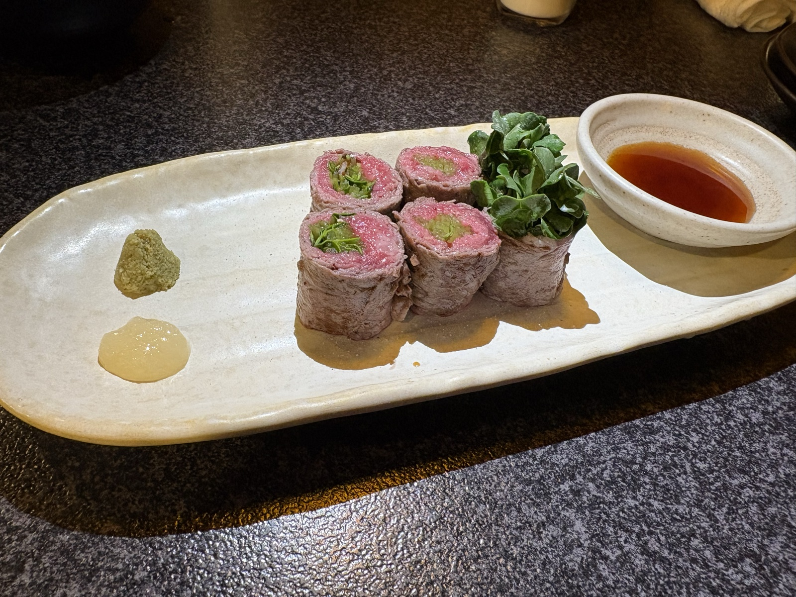
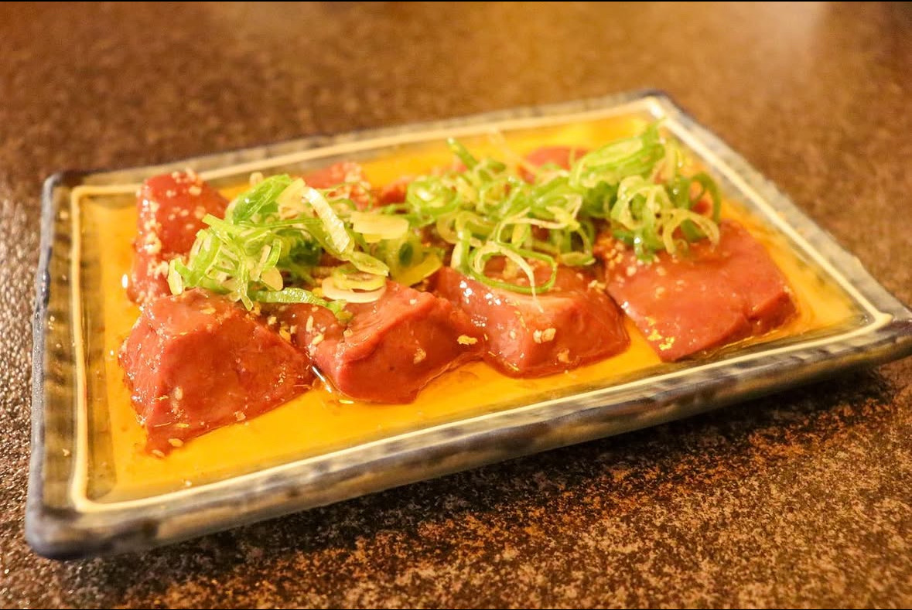
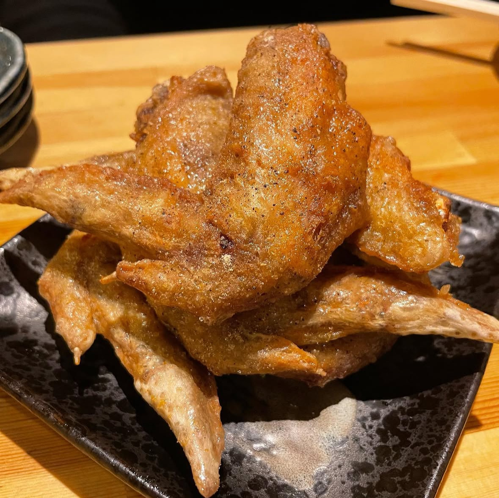

ホルモン炒め
¥800（税込 ¥880）創業以来、変わらぬ味を守り続ける一皿。松金を語るうえで欠かせない料理です。
Menu
新鮮なホルモンを使った料理をはじめ、松金で楽しめる豊富なメニューをご紹介します。
Dishes
しっかり食べたい1軒目にも、最後にもう一皿楽しむ〆にも。松金は、その日の使い方に合わせて立ち寄れる店です。
創業以来、変わらぬ味を守り続ける一皿。松金を語るうえで欠かせない料理です。

肉の旨みとかいわれの香りが重なる、常連にも選ばれてきた一品。

〆にも、もう一品にも。松金らしい旨みが詰まった焼きそば。

やみつきスパイス香る、酒がすすむ人気の一品。
生から焼くからこその旨み。お酒に合う、松金らしい一品です。
ほかのページも見る